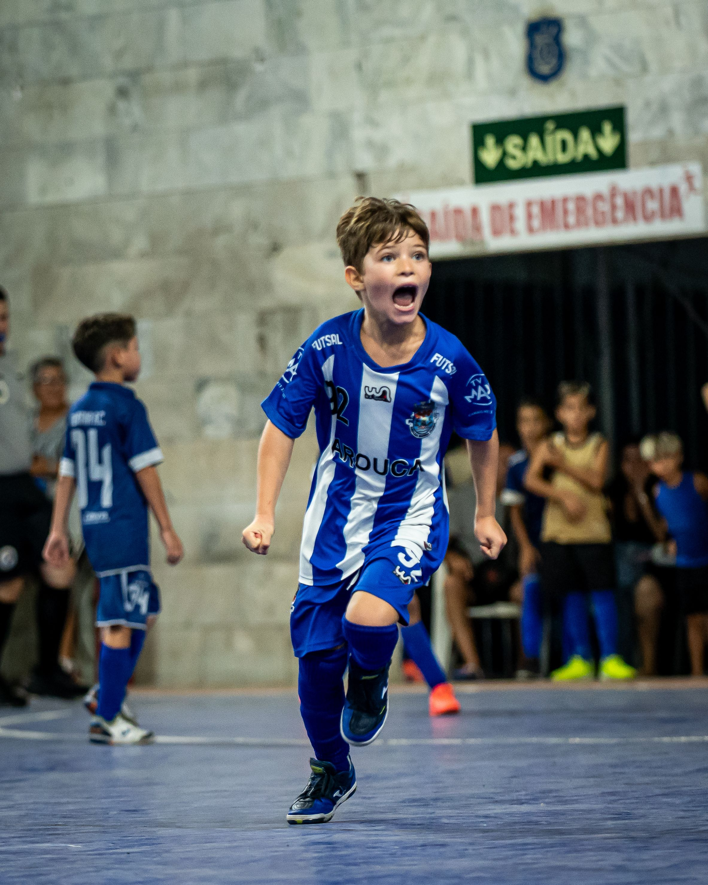
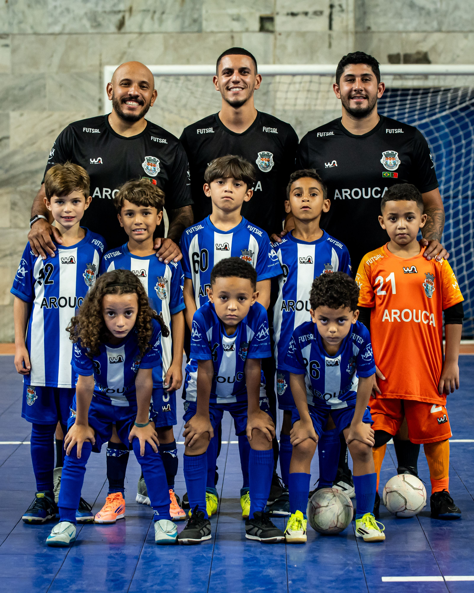
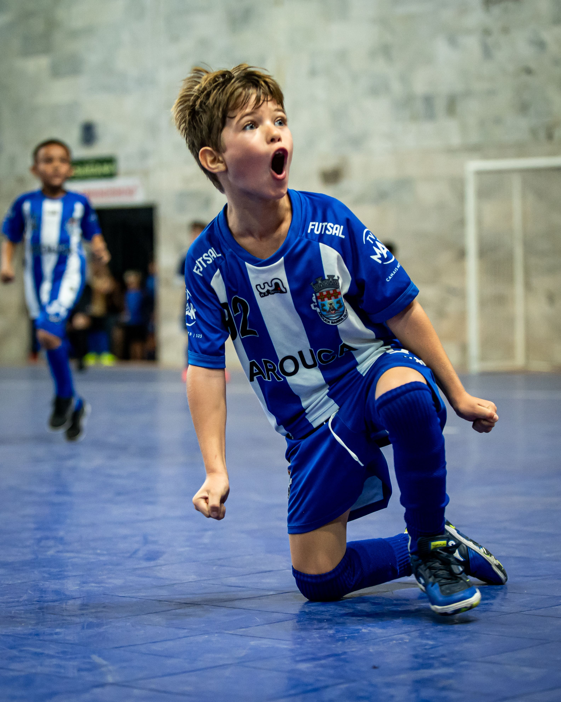
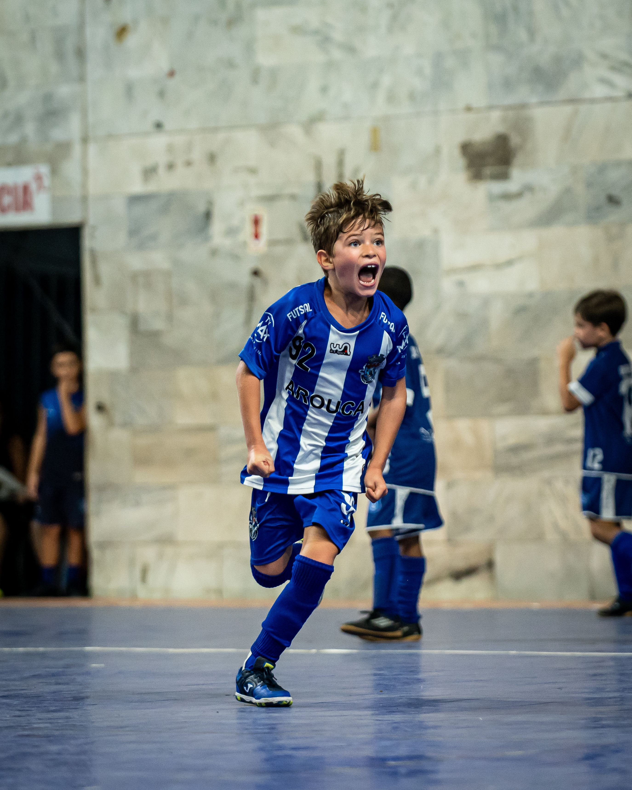
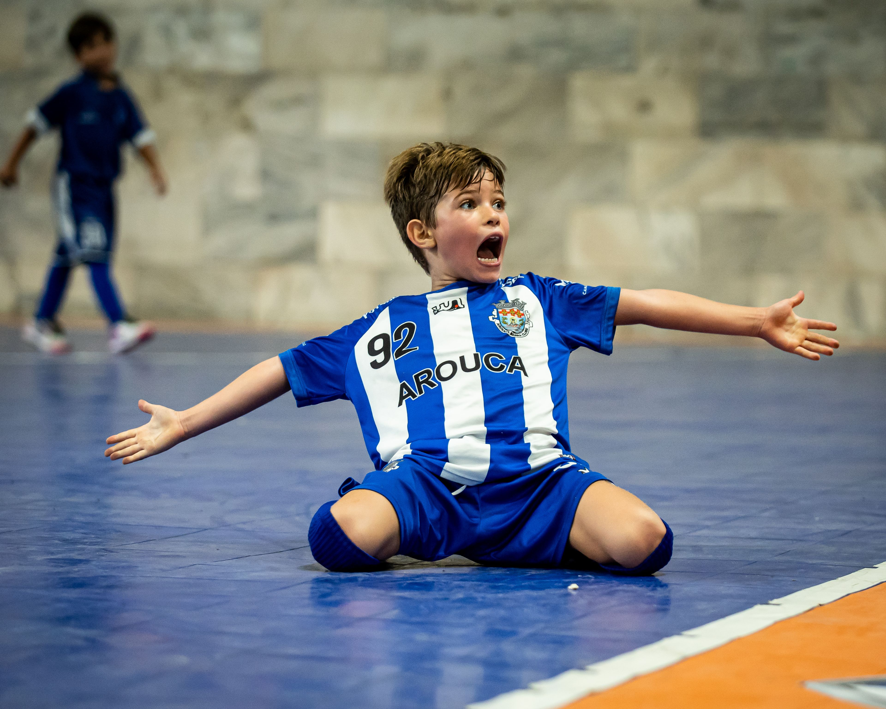
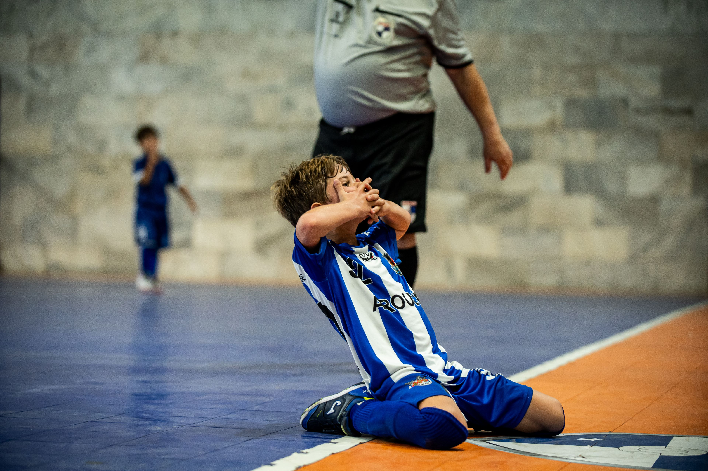
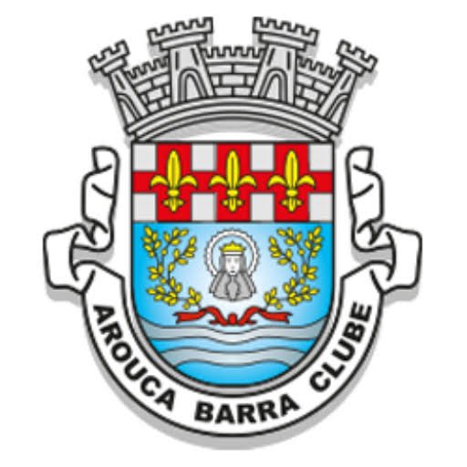

Luso-brasileiro • Rio de Janeiro • Geração 2018
G9 Gustavo Aguiar
Talento que vibra, compete e decide.
Explosão, talento e faro de gol desde os primeiros passos no esporte. Com apenas 7 anos, Gustavo Aguiar já constrói uma trajetória marcante no futsal e no futebol.
Sobre o atleta
Conheça o G9
Gustavo Aguiar
Gustavo Aguiar, conhecido como G9, é um jovem atleta luso-brasileiro nascido em maio de 2018, no Rio de Janeiro. Atua como pivô no futsal e atacante no futebol, com pé direito e 1,34m de altura.
Começou a treinar futsal em fevereiro de 2025 e, já no mês seguinte, iniciou sua participação em campeonatos, sendo federado logo no começo da sua trajetória competitiva. Desde então, vem se destacando pela entrega, intensidade, personalidade e faro de gol.
Trajetória
Uma história em evolução
Início no futsal
Gustavo começa seus treinos e dá os primeiros passos em uma trajetória marcada por dedicação e alegria.
Primeiros campeonatos
Logo no mês seguinte, inicia sua participação competitiva e passa a disputar torneios.
Federação e destaque ofensivo
Com rápida evolução, começa a chamar atenção por sua presença ofensiva e capacidade de finalização.
Consolidação competitiva
No Arouca, fortalece sua identidade dentro de quadra e constrói números expressivos.
Protagonismo e regularidade
Segue evoluindo com alto volume de gols, intensidade e participação decisiva em competições.
Estatísticas
Números que impressionam
Atualizado em 24/04
Highlights
Veja o G9 em ação
Velocidade, presença ofensiva, emoção e faro de gol traduzidos em movimento.
Galeria
Comemoração, disputa e intensidade






Perfil técnico
Características em quadra

Arouca Barra Clube
Ambiente de formação, disciplina e evolução
No Arouca Barra Clube, Gustavo vem desenvolvendo sua trajetória em um ambiente competitivo e formativo. É nesse cenário que o G9 fortalece sua identidade dentro de quadra, ganha experiência e transforma dedicação em desempenho.
Trilha
Sonho de G9
Uma trajetória construída com dedicação, família, treino, emoção e sonho.
Acompanhe a trajetória do G9
Um jovem talento em evolução, construindo sua história com dedicação, emoção e muitos gols.
Seguir no Instagram